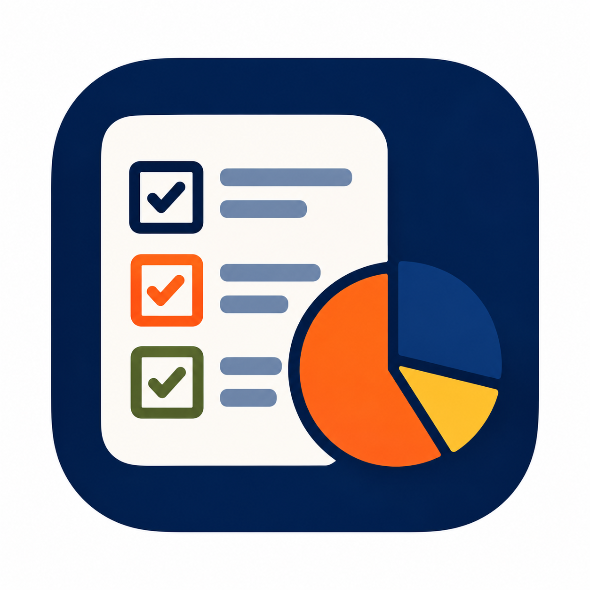

02 / DWA SPOJRZENIA
Czy oceniamy siebie wyżej?
Porównanie dwóch odpowiedzi tej samej osoby w obrębie jednego pomiaru.

LUSTROANKIETY O DEZINFORMACJIWIEDZA W NASZYCH OCZACH
Zobacz, jak ankietowani oceniają swoją umiejętność rozpoznawania dezinformacji. Porównaj perspektywy oraz odpowiedzi przed i po spotkaniu.
WYBIERZ RODZAJ ANALIZY
Zaznacz spotkania, które mają wejść do wyniku zbiorczego i porównania przekrojowego.
Jeden plik z chmury oraz dwa pliki z quizu: PRZED i PO. Każdy ma własne pole poniżej.
Eksport z chmury: odpowiedzi otwarte i ocena siebie oraz innych. Jeden XLSX może zawierać oba pomiary.
Osobny plik z odpowiedziami na test wiedzy przed spotkaniem.
Osobny plik z odpowiedziami na test wiedzy po spotkaniu.
TEST WIEDZY + SAMOOCENA + OBRAZ PODATNOŚCI
Dodaj eksporty testu „Emocje i dezinformacja” (7 pytań). Wyniki testu analizujemy osobno, a następnie zestawiamy z ankietą wybranej grupy.
W filtrach ankiety wybierz jedno miejsce i jedną datę. Różne liczebności oznaczają liczbę odpowiedzi otrzymanych w poszczególnych pomiarach.
08 / ANALIZA WIELU SPOTKAŃ
Wynik zbiorczy jest ważony liczbą odpowiedzi. Analiza przekrojowa pokazuje każde spotkanie osobno.
OCENA ZAJĘĆ PRZEZ UCZNIÓW
Refleksje z osobnego arkusza Google, dobierane do miejsca i daty wybranego spotkania. To opinie o zajęciach, odrębne od pomiaru wiedzy i samooceny.
Wczytaj swój pierwszy plik lub otwórz przykład, aby zobaczyć analizę.
01 / ROZKŁAD ODPOWIEDZI
Procenty odnoszą się do rozpoznanych odpowiedzi na dane pytanie. Braki i wartości spoza skali pokazujemy osobno. Wartości po zaokrągleniu mogą nie sumować się do 100%.
02 / DWA SPOJRZENIA
Porównanie dwóch odpowiedzi tej samej osoby w obrębie jednego pomiaru.
03 / PRZED → PO
04 / SPOTKANIA OBOK SIEBIE
05 / KTO DAJE SIĘ NABRAĆ?
Porównaj, komu przypisywana jest podatność i jak wiąże się to z samooceną. Punktem wyjścia są kategorie z pliku. Możesz je skorygować po przeczytaniu wypowiedzi; oryginał pozostaje widoczny.
06 / ANALIZA STATYSTYCZNA
Ocena, czy różnice PRZED/PO wykraczają poza przypadkowe wahania w dostępnych próbach.
07 / OCENA OPISOWA
Automatyczne podsumowanie widocznego zakresu danych. Wnioski dotyczą grupy i wskazują najważniejsze tendencje; nie są oceną pojedynczych osób.
To dwa uzupełniające się elementy ewaluacji. Test mierzy wiedzę o wybranych mechanizmach dezinformacji, a pytania ankietowe pokazują, jak uczestnicy oceniają własne umiejętności oraz umiejętności innych.
Odpowiedzi „tak” i „raczej tak” łączymy jako odpowiedzi pozytywne. Różnica „ja–inni” to różnica ich udziałów w punktach procentowych. W porównaniu odpowiedzi jednej osoby porządek skali to: nie → raczej nie → raczej tak → tak. „Nie wiem”, braki i nieznane wartości nie mają miejsca na tej skali.
PRZED i PO to dwa pomiary tej samej grupy uczestników tych samych warsztatów. Różne liczebności oznaczają liczbę odpowiedzi otrzymanych w danym narzędziu i pomiarze.
Zakres danych: wynik testu, samoocena i odpowiedzi otwarte pokazują różne aspekty efektów warsztatów. Czytane łącznie tworzą pełniejszy obraz zmiany wiedzy, pewności własnych umiejętności i sposobu rozumienia podatności na dezinformację.